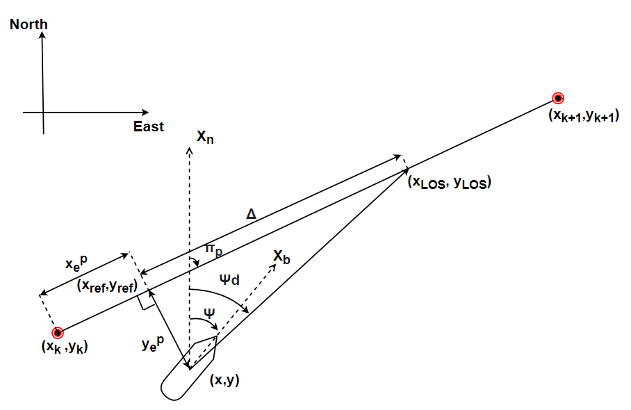

Autonomous Waypoint Tracking of an Underactuated Kriso Container Ship
A practical implementation and tuning of a guidance and control system for waypoint tracking of an underactuated unmanned surface vessel was performed. The algorithms were tested in a simulation environment with different gains on the controller. To validate the simlation results a set of waypoint tracking experiments were performed. A PD controller with an integral line of sight guidance scheme was implemented and tested successfully.
Model scale experiments were performed in the Institute lake of IIT Madras. The test vessel that we use for implementing and validating the guidance and control algorithms is a 1:75.5 scaled model of the Panamax class single screwed Kriso Container Ship (KCS), named as Matsya, designed and fabricated by the Marine Autonomous Vehicles (MAV) Laboratory, IIT Madras.
The integral Line of sight guidance and a PD controller were simulated along with the dynamics of the vessel using the MMG mathematical model. The ILOS guidance scheme computes a desired heading angle that orients the heading of the vessel towards a point some fixed distance ahead along the line joining two successive waypoints. A tuned PD controller commands the control input to the vessel to track the desired heading generated by the guidance algorithm.
